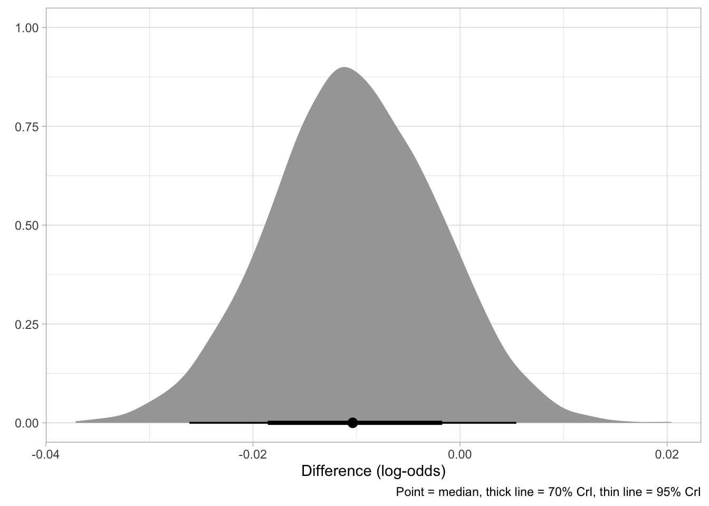

Code
library(tidyverse)
theme_set(theme_light())
library(brms)
library(posterior)
library(ggdist)Stefano Coretta
This is an example of how to report a Bayesian regression analysis. It is in the shape of an academic paper, but several sections and figures that would normally appear in a standard article are omitted here given the focus is on how to report the regression analysis.
This article is on a fictitious study of a subset of the MALD data (Tucker et al. 2019). The data contains reaction times and accuracy from an auditory lexical decision task in English. Here we consider only the reaction times data.
This study sets out to answer the following questions:
Does the lexical status of the word affect reaction times?
Does the mean phone-level Levinshtein distance affect reaction times?
Does the effect of mean phone-level distance on reaction times differ depending on the lexical status?
In order to answer the research questions presented in Section 1, we fitted a Bayesian regression model with brms (Bürkner 2017, 2018) in R version 4.5.0 (R Core Team 2025). The model was first run with four MCMC chains and 2000 iterations, of which 1000 for warm-up. Since the resulting estimated sample size (ESS) was flagged by brms as too low, we refitted the model by increasing the number of iterations to 4000 (of which 2000 for warm-up). The model fully converged with \(\hat{R}\) values of approximately 1 and sufficient ESS.
mald <- readRDS("data/mald.rds") |>
mutate(
PhonLev_c = PhonLev - mean(PhonLev)
)
# Model with iter = 2000 gave warning of low ESS. Fit with iter = 4000.
rt_full <- brm(
RT ~ 0 + IsWord + IsWord:PhonLev_c +
(0 + IsWord + IsWord:PhonLev_c | Subject),
family = lognormal,
data = mald,
cores = 4,
iter = 4000,
seed = 7238,
file = "data/cache/rt_full.rds"
)The model structure was the following: we used a log-normal distribution for the outcome variable, i.e. the reaction times (RTs). A log-normal distribution is a standard distribution for numeric variables that are bounded to positive values only, like reaction times (see e.g. Rosen 2005). We included the following predictors: lexical status of the target word (real vs nonce) and mean phone-level Levinshtein distance of the target word (range approx. 5-14). The lexical status predictor was coded using indexing rather than traditional contrasts (McElreath 2019) by suppressing the model’s intercept with the 0 + syntax in the model’s formula. The mean phone-level distance was centered by subtracting the grand mean of the mean phone-level distance. An interaction between lexical status and phone-level distance was also included. Furthermore, we included varying terms (aka random terms, see Gelman 2005) by subject for lexical status, phone-level distance and the interaction between the two. We did not include by-word varying terms since the majority of data is from distinct words (the exceptions are 130 words of 2867 which have two or three observations in total, rather than one). We used the brms default priors. Table 1 reports the mean, standard deviation and lower and upper limits of the 95% Credible Interval (CrI) for the model’s coefficients in logs and log-odds (which is the scale returned by log-normal regressions). For ease of interpretation, we will also convert estimands to odds and milliseconds where relevant.
| coefficient | mean | SD | lower | upper |
|---|---|---|---|---|
| IsWordTRUE | 6.85 | 0.02 | 6.82 | 6.88 |
| IsWordFALSE | 6.97 | 0.02 | 6.92 | 7.01 |
| IsWordTRUE:PhonLev_c | 0.03 | 0.01 | 0.02 | 0.04 |
| IsWordFALSE:PhonLev_c | 0.02 | 0.01 | 0.01 | 0.03 |
According to the model, the mean RT with real words (IsWordTRUE), when the mean phone-level distance is at its grand mean (approx 7), is between 916 and 973 ms, at 95% probability. With nonce words (IsWordFalse) and average mean phone-level distance, the mean RT is between 1012 and 1108 ms, at 95% probability.
# Calculate odds-ratio for real words
round(exp(c(0.02, 0.04)), 2)
# Calculate odds-ratio for nonce words
round(exp(c(0.01, 0.03)), 2)
# Calculate odds-ratio between distance = 5 vs 14 (real words)
round(exp(c(0.02*9, 0.04*9)), 2)
# Calculate odds-ratio between distance = 5 vs 14 (odd words)
round(exp(c(0.01*9, 0.03*9)), 2)Moving onto the effect of mean phone-level distance, the model suggest an appreciable increase in RTs with greater phone-level distance: the estimated effect for each unit increase in distance is an increase between 0.02-0.04 log-ms (2-4% increase) with real words and an an increase between 0.01-0.03 log-ms (1-3% increase) with nonce words. The phone-level distance in the data ranges from about 5 to about 14 (mean = 7). When comparing real words with distance = 5 to real words with distance = 14, we can expect an average increase of about 20-40% (at 95% confidence). For nonce words, the increase is between 9-31% (at 95% confidence). We interpret these estimates to indicate a moderately robust effect of distance in both real and nonce words.
q5 q95
-0.024 0.003 As to the question of whether the effect of phone-level distance is different in real vs nonce words, the 95% CrI of the difference is [-0.024, +0.003]. The posterior distribution of the difference is shown in Figure 1.
